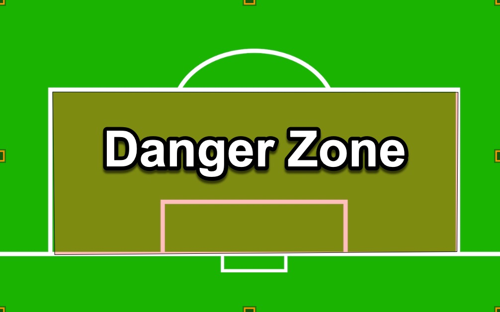
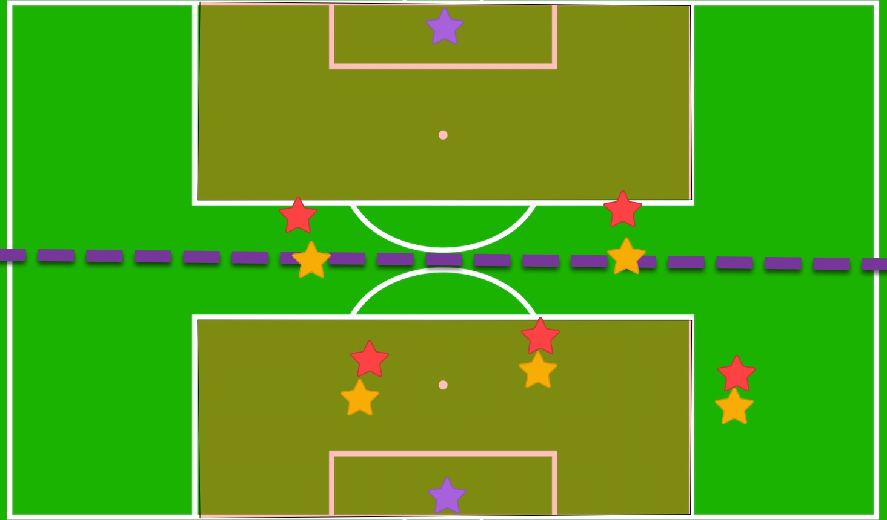

Understanding Marking
Effective marking is the foundation of solid defensive play. It's about knowing where to position yourself,
maintaining awareness of both your opponent and the ball, and communicating with your teammates to create
an organized defensive unit.
The Danger Zone Concept
We refer to the goalie box as the danger zone. In this danger zone, we should be so close to
our player that we can reach out and grab their shirt.

On the indoor field, our half is practically the entire danger zone. We need to be in a constant mindset of
staying within "shirt-grabbing" distance, ensuring that we are fully marked up in our defensive half. If the
opposing team plays a defender up, it gives us a slight advantage; our top-position players can help while still
keeping a vigilant eye on their defensive responsibilities.

Key Marking Principles
- Danger zone: Treat our entire defensive half as the danger zone.
- Tight marking: Any opposing player crossing half should be marked 100%, with us close enough to
touch them.
- Goal-side positioning: Always position yourself between your opponent and the goal.
- Communication: Remember to call out who you're marking - "I've got #7!"
- Ball awareness: Keep one eye on your mark and one eye on the ball.
- Anticipation: Read the game and anticipate passes before they happen.
When to Mark Tight vs. Provide Space
Mark Tight When:
- Your opponent is in or near the danger zone
- The ball is on your opponent's side of the field
- Your opponent is making a run towards goal
- During set pieces and corners
Provide Spacing When:
- Your opponent is far from the ball
- You need to provide cover for a teammate
- The ball is on the opposite side of the field
- You're transitioning from defense to offense
Common Marking Mistakes to Avoid
- Ball-watching: Losing track of your mark while watching the ball
- Getting too tight too early: Being vulnerable to runs behind you
- Standing still: Not adjusting position as play develops
- Lack of communication: Not calling out switches or when you need help
- Wrong side positioning: Allowing your opponent to get goal-side of you
Marking Drills to Practice
- Shadow marking drill - Follow your partner's movements without the ball
- 1v1 defending in the box - Practice tight marking in confined spaces
- Defensive transition drill - Switch from offense to marking quickly
- Communication circles - Practice calling out marks and switches